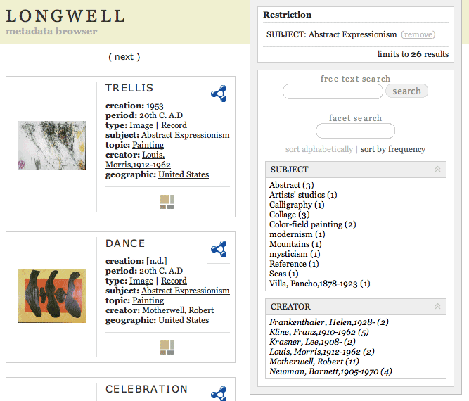
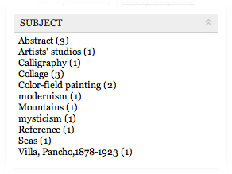
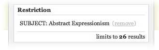
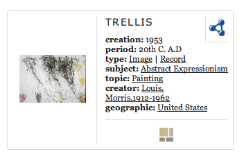

Longwell is a web application designed to let you browse and search an RDF model, especially when big (we use it for datasets that have 500k statements).
Learning to configure Longwell to suit your needs requires some basic knowledge of Semantic Web concepts as well as a familiarity with RDF/N3 syntax. Also, a reasonable idea of the shape of the data you plan on browsing before getting started is helpful, at least the classes or properties that you want to focus on: this dramatically increases the usefulness of the browsing experience.
This guide provides information on where to find configurable elements of Longwell and how to change their settings.
Longwell was designed to be configurable without requiring people to write and/or modify its source code.
Also, in order to to help you understand how Longwell can fit your needs and how flexible it can be, we ship it with a number of example data bundles that come from very different domains.
Longwell is a web application written in Java and will run in any J2EE-compatible servlet container or application server. For your convenience, we have prepackaged one in the distribution and wrote scripts to help you getting ready without hassle, even if you are not familiar with Java application serving environments. On the other hand, if you are, Longwell can be deployed into your existing servlet container with ease.
The only requirement for Longwell is a Java Virtual Machine (JVM) version 1.4.x installed on your operating system (we have not tried it on a 1.5 JVM yet, if you do, let us know). If you don't have a JVM installed, you can download one for free at the Java main web site. Our build process currently requires that you have a development kit version of the Java toolset installed; anything other than a simple 'Java VM' installation will suffice. For example, try using the J2SE SDK 1.4.2.
In order to get Longwell up and running with one of the example data bundles that we ship, you can follow the following list of instructions:
cd to the base directory of the Longwell distribution"./build.sh" on Unix/MacOSX or "build.bat"
on Windows. "./longwell.sh run" on Unix/MacOSX or "longwell.bat
run" on Windows.If you know want to see another data bundle, do:
"./build.sh clean-webapp" (this will clean the
webapp from
data)
The most important aspect of Longwell is the "faceted browsing" UI paradigm.
A facet is a particular metadata field that is considered important for the dataset that we are browsing. Since Longwell is a general-purpose browser, it has no notion of particular metadata schemas, so the facets must be configured before Longwell can browse a dataset.
Once the facets are selected for a specific dataset (this is done before running the web application) Longwell starts processing the dataset and extracts a list of facets, their values and the number of times this facet value occurs in the dataset. This is shown in the right hand side, where each facet is boxed independently.

By clicking on a facet value, Longwell adds a facet restriction and eliminates all items that do not fulfill that restriction. The facet pane on the right is also updated, showing the facets and their values that are available in that sub-dataset for further drill-down.
When no more facet restrictions are possible, the right pane will be empty.
Clicking on the right pane has the effect of "zooming in" the dataset by locally removing from the view anything that it's not of interest at that particular time. The user also has the ability to "zoom out" by removing a restriction that was previously selected (top right box).

The result of the restriction is a subset of the items available in the dataset (what is considered "an item" is also a configurable property of Longwell). Longwell can also be configured to display particular properties of the items in various ways, and, mixing with CSS stylesheets, it is possible to obtain pleasant presentations of them, without having to modify Longwell's source code.

By clicking on any of the item properties, the current restrictions are removed and the browsing is then restricted to all items that contain that particular value in any facet. At this point, further restrictions can be added by clicking on the right pane.
Longwell also gives the ability to perform a "free text" restriction, this reduces the browsed dataset to all items that contain the searched strings in their properties values. This restriction is triggered by entering text in the "free text search" box.
Also, since the different number of facet values can become very large, Longwell provides a "drill as you type" facet search field that is used, in place, to spot the facet values of interest.
As you can see, all the RDF complexity is hidden to the user. This is done on purpose, since Longwell is aimed to be used by non-RDF-savy end users, but for those who want to see "behind the scenes" and understand the RDF model that backs up this data, you can click on the RDF icon of any item to have a detailed RDF-centric view of the data you are looking at.
In order to make it easier for people to use and understand Longwell, we ship it with a collection of freely redistributable datasets, ontologies and data bundles.
Ontologies are used mainly to render resources with appropriate labels and to indicate semantic information (such as equivalences or subclassing) that drives the metadata inferencing. Many ontologies are shipped in the Longwell distribution, particularly RDF, RDF Schema, DC, and OWL. Also we provide our own for a number of datasets that do not have an official RDF ontology available.
Longwell ships with a number of RDF datasets or XML datasets with conversion tools or scripts that convert them into RDF ones. For up-to-date information on the available datasets and their origin, consult the dataset list from the simile public repository.
The SIMILE team believes that the power of the semantic web can be unleashed when data can be reused "as-is" and combined in meaningful ways. This is also called the "network effect" or "data synergy". In order to show this, the Longwell build system was designed to have a notion of a dataset, which is an organic database that originates from a single group or entity and a bundle, an aggregation of datasets, ontologies, configurations and optional "glue data" that makes it possible to show the power of the semantic web in merging heterogeneous metadata that was not designed, up front, to be joined and reused in such a way.
For up-to-date information on the available bundles and their contents, consult the bundles list from the simile public repository.
Longwell ships with pre-configured data bundled, but if you want to use Longwell to browse your own RDF datasets, you need to configure it with some data-specific configuration in order for it to be able to operate.
There most critical part to configure is the "display configuration" that tells Longwell how to interpret the metadata (for example, what are the facets) and how to visualize it (for example, if the value of a property should be treated as a string, as a URL or as the pointer to an external object, say, an image).
This configuration is an RDF model and we found out that for writing RDF by hand, the N3 syntax feels a lot more natural than the RDF/XML one. The file is normally called config.n3 and is located in the conf directory of every data bundle (in the data/bundles/*/conf directory, where * means the name of the bundle)
Here is an example for a configuration file for the data bundle about people (taken from the one shipped with Longwell and simplified a little for readability):
@prefix dc: <http://purl.org/dc/elements/1.1/> .
@prefix rdf: <http://www.w3.org/1999/02/22-rdf-syntax-ns#> .
@prefix foaf: <http://xmlns.com/foaf/0.1/> .
@prefix rdfs: <http://www.w3.org/2000/01/rdf-schema#> .
@prefix disp: <http://simile.mit.edu/2004/02/ontologies/display#> .
@prefix : <#> .
:People a disp:BrowserConfiguration ;
disp:lang "en" .
:People disp:displayProperties (
foaf:name
foaf:nick
foaf:mbox
foaf:depiction
rdfs:seeAlso
foaf:homepage
dc:thumbnail
dc:description
foaf:plan
) .
:People disp:displayFacets (
rdf:type
foaf:knows
).
:People disp:displayClasses (
foaf:Person
foaf:Image
) .
:People disp:propertyObjectDisplay (
rdfs:seeAlso
foaf:depiction
foaf:mbox
foaf:homepage
dc:thumbnail
) .
rdfs:seeAlso a disp:Link .
foaf:depiction a disp:GetImage .
foaf:mbox a disp:Link .
foaf:homepage a disp:Link .
dc:thumbnail a disp:GetImage .
The first part is composed by the prefixes, these indicate what what
URI those namespace prefixes are bound to in this particular RDF model:
@prefix dc: <http://purl.org/dc/elements/1.1/> .
@prefix rdf: <http://www.w3.org/1999/02/22-rdf-syntax-ns#> .
@prefix foaf: <http://xmlns.com/foaf/0.1/> .
@prefix rdfs: <http://www.w3.org/2000/01/rdf-schema#> .
@prefix disp: <http://simile.mit.edu/2004/02/ontologies/display#> .
@prefix : <#> .
The last line basically indicates that lack of prefix is bound to
the dummy URI. This is normally used to indicate that the data
contained in the RDF model is not really to be used in a semantic web,
but has just local meaning. At this point we are ready to tell our
story with this model, so the first statement
:People a disp:BrowserConfiguration ;
disp:lang "en" .
indicates that the concept :People
is of type
disp:BrowserConfiguration.
This will be used by Longwell to know that
this information should be used to configure itself. It also indicates
that the default language selection, when faced with multiple language
options, is the language code "en." The next group of
statements defines what properties should be presented to the UI:
:People disp:displayProperties (
foaf:name
foaf:nick
foaf:mbox
foaf:depiction
rdfs:seeAlso
foaf:homepage
dc:thumbnail
dc:description
foaf:plan
) .
In particular, this says that the dist:displayProperties
for the
:People browser configurations
are a rdf:List and
that the items are the list of the values that
this disp:displayProperty
assumes.
The next group of statements indicates what fields Longwell should
interpret as facets:
:People disp:displayFacets (
rdf:type
foaf:knows
).
Here, the two facets are rdf:type
and foaf:knows, which
basically
means that we are interested in the types of our data items and about
their foaf:knows property.
But Longwell needs to know what data should be considered an item,
so here that's next:
:People disp:displayClasses (
foaf:Person
foaf:Image
) .
where these statements indicate that we consider first-class data
items in our datasets those of class foaf:Person
and foaf:Image, while
everything else is to be considered corollary information around them.
:People disp:propertyObjectDisplay (
rdfs:seeAlso
foaf:depiction
foaf:mbox
foaf:homepage
dc:thumbnail
) .
So, we have already identified the dist:displayProperties and this will make those
properties show up for the item in the order
listed, if they are available (keep in mind that RDF data tends to be
very semi-structured, so it's natural, when you aggregate data from
different sources, that some properties might not be there).
On the other hand, properties in disp:propertyObjectDisplay will be transformed to one of the options (external link, fetched image, replacement image, etc.) as specified in the configuration (see below). For this reason, properties in dist:propertyObjectDisplay should be a subset of those in disp:displayProperties.
At this point, we have identified all the information that Longwell needs to operate on the data level, but then we might want to add a little more functionality by indicating how some of this information should be treated:rdfs:seeAlso a disp:Link .
foaf:depiction a disp:GetImage .
foaf:mbox a disp:Link .
foaf:homepage a disp:Link .
dc:thumbnail a disp:GetImage .
so, an rdfs:seeAlso
property should be considered a disp:Link,
therefore displayed in a way so that users can click on it (in HTML
this translates into an <a
href=""> tag), foaf:depiction should
be considered as a URL reference pointing to an image (in HTML this
will be translated into an <img
src=""> tag), and so on.
Each bundle has a configuration file that is used by the build
system to prepare the Longwell web application. This file is called data.properties and it's found in
the root directory of each data
bundle. This is a Java properties file and follows the usual
"name=value" convention.
The most important configurations are the first three properties, here
is an example taken from the art-public bundle:
# list of datasets used
bundle.datasets = ocw,via,loc-tgm
# controls the inferencing
inferencing = yes
# dynamically allow addition of data by URI to the store
allowAdd = true
the first properties indicate that three datasets (namely ocw, via and loc-tgm) are used by this bundle, the second indicates that Longwell should perform inferencing upon loading the RDF models contained in this bundle, and the third allows any user to add more data to the model by providing a URI, modifying the UI slightly to add a text box to the navigation interface..
Thanks to Andreas Harth and his work on SECO scutter, Longwell can also 'scutter' (or spider) for RDF across the web based on rdfs:seeAlso links.
# scutter properties
scutter.enabled = true
# how many levels down to follow rdfs:seeAlso links; 0 for none at all
scutter.depth = 0
# where to index the scutter internal model
scutter.indexPath = /WEB-INF/scutter-index
Each dataset contains a build.xml file that indicates some activity that the build system has to perform on the dataset before being included in the Longwell web application for it to load them when started.
This action could just do nothing (if the RDF is already there), or it could do things like unpacking a zip file (in case the RDF is compressed) or more complex things like running an XSLT stylesheet on top of an XML file to generate an RDF/XML representation of it, or even running a custom script/program to generate the RDF model from other data.
The Longwell build system was designed to be easily extensible so that you can plug in your own bundles, datasets and ontologies.
The ./data directory of the Longwell distribution is where all the data is stored.
If you have more than one dataset to merge, we suggest you to create a bundle and then reference them from it.
If you just want to browser one single dataset that you have already in RDF, probably the easiest way is just to create your own bundle and put those RDF files in the ./data directory inside your bundle, they will be copied over by the build system into the web application.
Alternatively, you can ignore the build system entirely and work directly with the Longwell web application.
At startup, Longwell looks for files with the .rdf, .rdfs, .owl and .n3 extensions in the ./WEB-INF/data/ folder of the web application, so it is enough that you place all the RDF files that you want Longwell to load and it will.
In any case, remember to modify the config.n3 file or Longwell might not be able to show you anything.
Longwell can read and acquire data from several different types of storage systems besides the bundling process described above. The simplest method for data storage is through file bundles, but you may have needs that a more advanced storage system can better meet. The term "repository" will be used to indicate a storage system from here on.
Currently, Longwell supports five different repositories:
Configuring Longwell to switch to a different repository requires editing the data.properties file found in a bundle. All of the sample data.properties files provided in the distribution contain all the key / value pairs allowed for configuration, so some of the core options can be changed by uncommenting the desired line and commenting out the default.
The type of repository is determined by the repository.type key (by default, 'files'):
repository.type = files
#repository.type = database
#repository.type = kowari-memory
#repository.type = kowari
#repository.type = joseki
#repository.type = 3store
#repository.type = sesame
The model used for querying the repository is given by the queryType key (by default, 'JenaLocalAPIModel'):
queryType = JenaLocalAPIModel
#queryType = JenaLocalRDQLModel
#queryType = KowariLocalAPIModel
#queryType = KowariITQLModel
#queryType = JosekiRDQLModel
#queryType = ThreeStoreRDQLModel
#queryType = SesameRDQLModel
#queryType = SesameSeRQLModel
Note that the correspondence between repositories and querying models is not one-to-one; more than one querying model might be used per repository.
Jena can either read files into memory or connect to a Jena-configured database. Use 'files' for the in-memory repository generated by files, 'database' for any of the databases.
These keys must be assigned values for the file-based in-memory repository:
repository.type = files
bundle.datasets = [comma-separated list of datasets]
inferencing = [yes|no]
queryType = [JenaLocalAPIModel|JenaLocalRDQLModel]
# data path for file repository, relative to the webapp directory
# by default, the path is WEB-INF/data
data.path = WEB-INF/data
The database repository can be based on either MySQL, PostgreSQL, or Oracle (though we at Simile haven't tested Oracle with Jena yet). Installing, configuring, and running the database systems is not within the scope of this guide, but more information can be found in the Jena MySQL how-to and the Jena PostgreSQL how-to. You will need to initialize a user and a database with the appropriate permissions. To function with Longwell, a JDBC2 driver .jar for the particular database you want to use must be deposited in the lib/repository/ directory. Links to appropriate .jar's can be found in the Jena how-to documentation.
Data must be injected into the database in a form Jena will recognize. To assist you, a Java command line tool was created. Found in the tools package (edu.mit.simile.tools), LoadDb takes the the database type, filename, database name, model name, and username as arguments:
% [~/longwell/trunk] ./tools.sh LoadDb MySQL mydata.rdf triples mydata myusername
or
C:\longwell\trunk\> tools.bat LoadDb MySQL mydata.rdf triples mydata myusername
These keys must be assigned values for the database repository, depending on which specific database is used:
repository.type = database
queryType = [JenaLocalAPIModel|JenaLocalRDQLModel]
database.type = [MySQL|PostgreSQL]
# MySQL config options, for database.type = MySQL
mysql.classname = com.mysql.jdbc.Driver
mysql.database = [name of database]
mysql.user = [username of database user]
mysql.password = [password of database user]
mysql.model = [name of model]
# PostgreSQL config options, for database.type = PostgreSQL
postgresql.classname = org.postgresql.Driver
postgresql.database = [name of database]
postgresql.user = [username of database user]
postgresql.password = [password of database user]
postgresql.model = [name of model]
Joseki can be run as a remote repository. There is a quick guide to publishing a Joseki repository available to cover the installation, configuration, and running of a Joseki instance. The joseki .jar is distributed with Longwell.
Your model must support RDQL queries (in the Joseki configuration, you should have your model with 'joseki:hasQueryOperation joseki:BindingRDQL' as one of the statements). Record the base URI from which your model is being served, then use it as the value of the joseki.uri key:
repository.type = joseki
queryType = JosekiRDQLModel
joseki.uri = [joseki model URI]
# e.g., joseki.uri = http://localhost:2020/mymodel
Kowari can be run with Longwell as either an in-memory repository or a remote repository. The in-memory repository does not require Kowari to be running in a separate instance and is akin to running with Jena in 'files' mode. Files will be loaded from the specified data path.
Kowari's .jar's are not distributed with Longwell. Place driver-1.0.3.jar, trove-1.0.2.jar, activation-1.0.2.jar, saaj-1.1.jar, and jrdf-0.2.1.jar in the lib/repositories/ directory after successfully running Kowari. The latest version tested with Longwell was Kowari 1.0.3.
repository.type = kowari-memory
queryType = KowariLocalAPIModel
data.path = WEB-INF/data/
kowari.model = [kowari model URI]
# e.g. kowari.model = <rmi://localhost/server1#sampledata>
To set up Kowari as a remote repository, see the Kowari Installation Guide. After setting up Kowari, use the model URI in the kowari.model key. Be aware that Kowari's model URI depends on the hostname of the machine it runs on; you may find it easier to run in an environment with static domain names.
repository.type = kowari
queryType = KowariITQLModel
kowari.model = [kowari model URI]
# e.g. kowari.model = <rmi://localhost/server1#sampledata>
3store is an RDF-aware repository based on MySQL and written in C. In our experience, 3store works best with MySQL 3.x, though your experience may differ. You can download it from its Sourceforge project; it also has dependencies on the Raptor RDF Parser Toolkit and Apache HTTPD (any version). You will need to compile 3store with the --enable-http option to allow queries to 3store over Apache. If you are working with large datasets and expect large results from queries, you may need to set a higher DEF_MAX_COMP value (defined in src/http/mod_3store.c, default to 1000 estimated results). The 3store Java driver used in Longwell was written by Simile and is distributed with Longwell.
Once 3store is running in concert with Apache, determine the URI Apache is configured to serve RDQL requests from (you may have set it yourself in the Apache configuration files) and use it as the 3store.uri key value.
repository.type = 3store
queryType = ThreeStoreRDQLModel
3store.uri = [URI of 3store model]
# e.g. 3store.uri = http://localhost/rdql/
Sesame runs as a remote repository from any servlet container. The Sesame documentation describes configuration using the Tomcat servlet container. Sesame can use its own in-memory repository or MySQL, PostgreSQL, or Oracle as data repositories. To set up the Sesame repositories, you can either edit the application configuration or run the configuration tool. You can then load data into the repository through Sesame's web interface. The sesame .jar is not distributed with Longwell. It must be acquired along with the Sesame distribution. Place sesame.jar in the lib/repositories/ directory after successfully running Sesame.
Determine the URI from which Sesame is being served, and locate which repository you want to query data from and use them as values of the relevant keys.
repository.type = sesame
queryType = [SesameRDQLModel|SesameSeRQLModel]
sesame.uri = [URI of sesame instance]
# e.g. sesame.uri = http://localhost:8080/sesame/
sesame.repository = [name of sesame repository]
# e.g. sesame.repository = rdbms-rdf-db
sesame.user = [sesame username]
sesame.password = [sesame password]
The most recent version of this guide can be found here. Please contact the Simile development team with any suggestions or errors through .